Locații de nuntă în Hunedoara
- locații în director
- 16
- cu cazare în registrul SITUR
- 8
- medie ponderată Google
- 4,4 / 5
- evaluări Google
- 8.644
Cum alegi o locație în Hunedoara
În Hunedoara poți începe comparația cu Hotel Phoenix (hotel), 365 Guest Apartments - Hunedoara RO (cazare în regim hotelier), Pensiune Carpați Hunedoara (pensiune). Aceste proprietăți apar în primele poziții când luăm în calcul împreună nota și numărul de evaluări Google. Salvează adresele care vă interesează pentru a le așeza apoi alături în fișa de comparare a ofertelor.
În fișele proprietăților poți compara dotări concrete la Hotel Phoenix (terasă, cazare, parcare gratuită), 365 Guest Apartments - Hunedoara RO (grădină, terasă, cazare). Pentru oferta de nuntă, întreabă ce spații și servicii dintre cele prezentate intră în rezervarea privată pentru data voastră.
Dacă vin rude de departe, Pensiune Carpați Hunedoara are o unitate de cazare asociată în registrul SITUR. Înregistrarea pentru Carpați cuprinde 16 locuri de dormit în 8 spații de cazare. Întreabă câte camere pot fi păstrate pentru aceeași noapte înainte să trimiți invitaților detaliile de rezervare.
Dacă vrei să vezi două proprietăți în aceeași zi, poți continua de la Pensiunea Restaurant Stadion spre Krystal Boutique Mansion din Peștișu Mare. Punctele lor sunt la 4,1 km în linie dreaptă. Deschide traseul înainte să fixezi ora celei de-a doua vizite, mai ales dacă grupul se deplasează cu autocarul.
Locații pentru vizionare
Ordinea ține cont de nota Google și de numărul evaluărilor. Cum calculăm ordinea
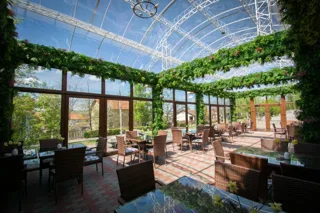
Fotografie a locației · Sursa fotografiei Hunedoara · Hotel
Hotel Phoenix
La Hotel Phoenix, o persoană și-a întâlnit douăzeci de apropiați pentru ziua de naștere și a apreciat atât mâncarea, cât și primirea.
Bulevardul 1848 21, 331059 Hunedoara+40 728 877 383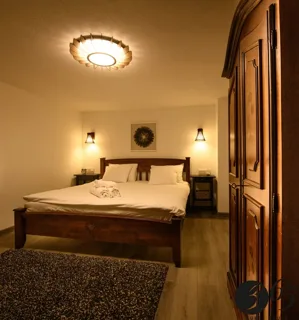
Fotografie a locației · Sursa fotografiei Hunedoara · Cazare în regim hotelier
365 Guest Apartments - Hunedoara RO
Apartamente în Hunedoara cu nota 5 din 123 de evaluări, grădină și loc de joacă; tarife de 299–399 de lei pe noapte pentru invitații tăi.
Strada Romanilor 33, 331032 Hunedoara+40 756 145 876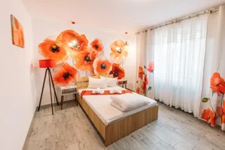
Fotografie a locației · Sursa fotografiei Hunedoara · Pensiune
Pensiune Carpați Hunedoara
Pensiune Carpați Hunedoara, Hunedoara. Pentru rudele care vor să viziteze orașul înaintea petrecerii, propuneți pensiunea ca punct de întâlnire.
Strada Carpați 76, 331032 Hunedoara+40 744 204 462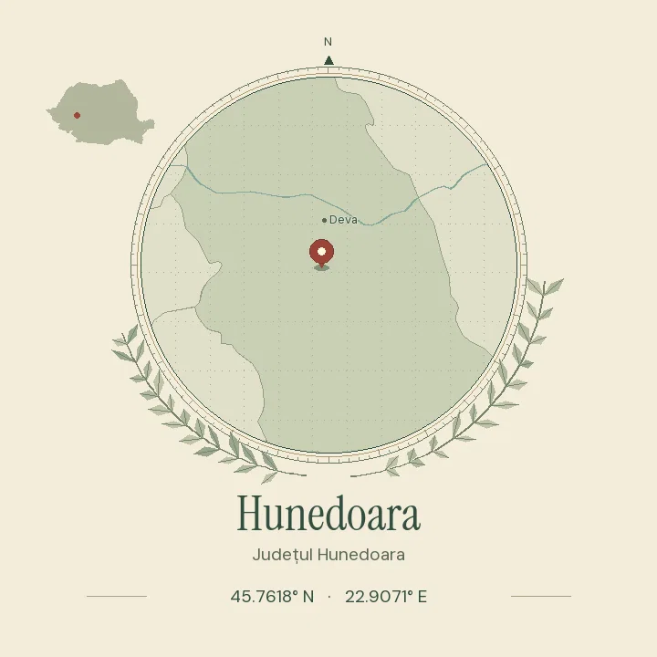
Hartă ilustrată Hunedoara · Pensiune
Williams House
La Williams House, un oaspete descrie camere mari și obiecte decorative în stil vintage, iar din fața casei se văd curtea pavată și o zonă de gazon cu copaci.
Bloc V4, Strada 1 Decembrie 1918 4A, 331040 Hunedoara+40 723 598 170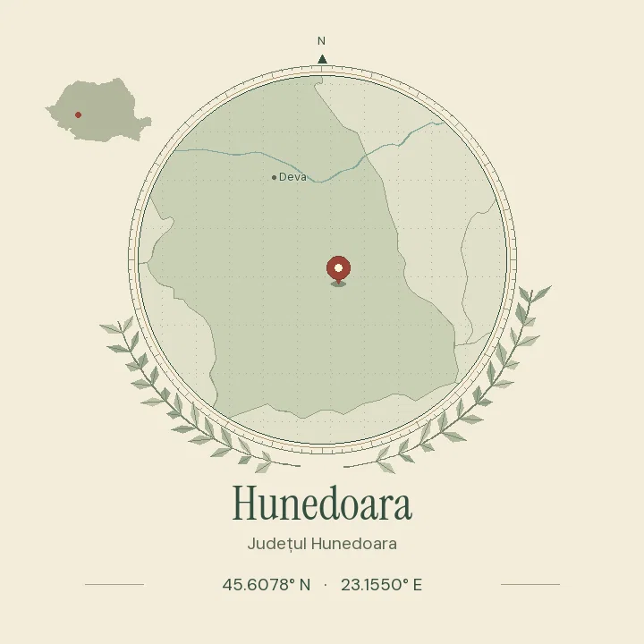
Hartă ilustrată Hunedoara · Pensiune
Pensiunea Dacica
Pensiunea Dacica. Un oaspete descrie terasa acoperită, echipată pentru pregătirea unei mese, și amintește că băile pentru bungalouri erau comune.
Sat Alun nr. 1, 337096 Hunedoara+40 757 322 422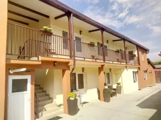
Fotografie a locației · Sursa fotografiei Hunedoara · Hotel
Camere de Inchiriat Carpati Hunedoara
Camere de închiriat în Hunedoara, cu bucătărie comună și parcare gratuită. Utile doar pentru cazarea invitaților; plusuri și minusuri.
Strada Carpați 78, 331032 Hunedoara+40 744 204 462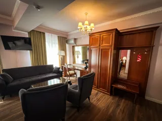
Fotografie a locației · Sursa fotografiei Hunedoara · Hotel
HEgo Boutique Hotel
Boutique hotel pentru adulți în Hunedoara, cu piscină exterioară și jacuzzi; 4,8 din 169 de evaluări, fără date despre evenimente.
Strada Ciprian Porumbescu 5, 331071 Hunedoara+40 770 597 602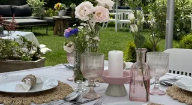
Fotografie a locației · Sursa fotografiei Hunedoara · Bed & Breakfast
La Fontaine
La Fontaine. Un organizator care a venit cu turiști germani povestește însă că la final au apărut dificultăți când grupul a vrut să achite.
Strada Rotarilor 4, 331116 Hunedoara+40 770 235 524Hartă ilustrată Hunedoara · Hotel
Pensiunea Rustic
Pensiunea Rustic, Hunedoara. Pentru machiaj și îmbrăcat, rugați pensiunea să arate camera disponibilă la ora la care va veni echipa.
Strada Dobrogeanu Gherea 6, Hunedoara+40 254 713 424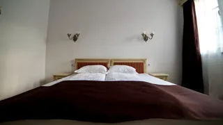
Fotografie a locației · Sursa fotografiei Hunedoara · Bed & Breakfast
Pensiunea Curtea Veche Hunedoara
Pensiunea Curtea Veche Hunedoara. Pentru o masă de familie înainte de cununie, sună bucătăria și întreabă dacă puteți alege felurile din timp.
Strada Cernei 2, 331130 Hunedoara+40 772 028 207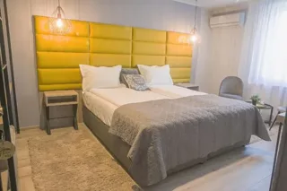
Fotografie a locației · Sursa fotografiei Hunedoara · Hotel
Corvin House
Hotel de familie în Hunedoara, lângă parcul Corvin: terasă spațioasă, mic dejun inclus. Camerele de la mansardă și parcarea mică merită verificate.
Strada George Enescu 23, 331017 Hunedoara+40 774 024 703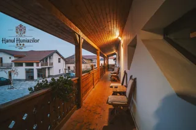
Fotografie a locației · Sursa fotografiei Hunedoara · Restaurant
Hanul Huniazilor HD
O familie care a luat masa la Hanul Huniazilor descrie cum personalul a împărțit desertul pe două farfurii pentru copiii cu preferințe diferite la sos.
Strada 9 Mai 4 , 331142, 331142 Hunedoara+40 766 473 879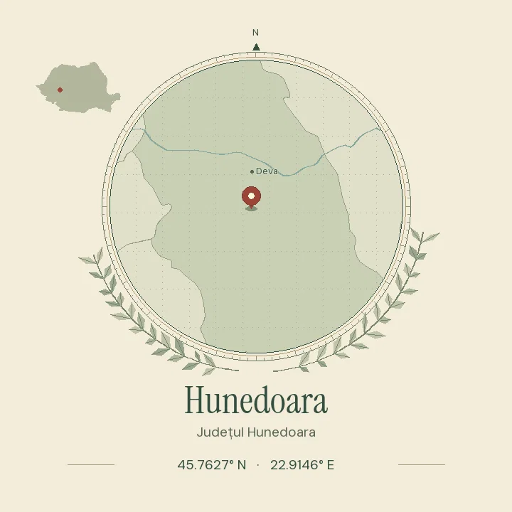
Hartă ilustrată Hunedoara · Cazare în regim hotelier
Pensiunea Restaurant Stadion
O persoană care a vizitat restaurantul Stadion din Hunedoara semnalează dificultăți la intrare pentru utilizatorii de scaun rulant.
Strada Mihai Viteazul 10, 331044 Hunedoara+40 728 961 017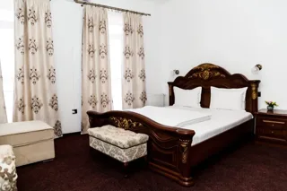
Fotografie a locației · Sursa fotografiei Hunedoara · Hotel
HOTEL CORVINIANA
HOTEL CORVINIANA, Hunedoara. La o degustare la Corviniana, cere bucătarului să îți arate garnitura așa cum va ajunge pe farfuria invitaților.
Strada Constantin Bursan 1, 331074 Hunedoara+40 721 798 171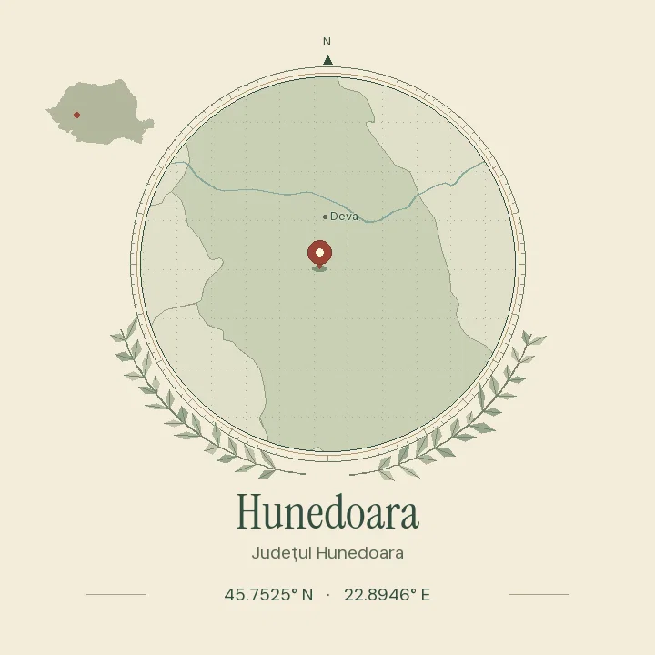
Hartă ilustrată Hunedoara · Pensiune
Popasul Castelului
La Popasul Castelului, un client povestește despre o masă cu ciorbă de burtă și pui cu cartofi care nu i-a fost pe gust.
Strada Cloșca 2, 331031 Hunedoara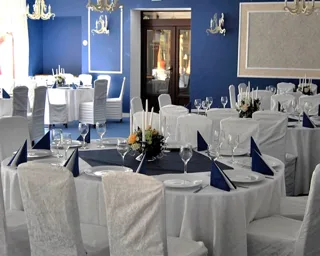
Fotografie a locației · Sursa fotografiei Hunedoara · Hotel
Hotel Rusca
Hotel Rusca, Hunedoara. Un vizitator descrie Rusca drept un hotel central, într-o clădire din perioada comunistă care a trecut prin renovări.
Bulevardul Dacia 10, 331086 Hunedoara+40 254 717 575
Întrebări despre locațiile din Hunedoara
Unde pot dormi invitații în Hunedoara?
În registrul de cazare SITUR găsim Pensiune Carpați Hunedoara (16 locuri de cazare), Camere de Inchiriat Carpati Hunedoara (16 locuri de cazare), HEgo Boutique Hotel (14 locuri de cazare). Verifică ce camere sunt libere pentru noaptea evenimentului.
Ce proprietăți din Hunedoara au grădină sau terasă?
Hotel Phoenix (terasă); 365 Guest Apartments - Hunedoara RO (grădină, terasă); Pensiunea Dacica (grădină). Cere administratorului condițiile de folosire pentru o petrecere privată.
Care locație din Hunedoara are cele mai multe evaluări Google?
Hotel Rusca are 1.465 de evaluări în profilul Google folosit la documentare. Evaluările acoperă și alte experiențe la proprietate, inclusiv vizitele fără eveniment.
Unde apare o intrare accesibilă în Hunedoara?
Profilurile Google indică o intrare accesibilă la Hanul Huniazilor HD, Pensiunea Restaurant Stadion. Pentru o cununie în exterior, cere detalii despre traseul dintre intrare și zona cu scaune.
Ce alte localități pot include într-o vizionare lângă Hunedoara?
Cele mai apropiate adrese comparate pe hartă sunt în Peștișu Mare, Deva. Găsești mai jos distanțele dintre proprietățile folosite pentru această comparație.
Vizionări în apropiere
- Peștișu Mare · 1 locație. Între Pensiunea Restaurant Stadion și Krystal Boutique Mansion sunt 4,1 km în linie dreaptă.
- Deva · 1 locație. Între Pensiunea Restaurant Stadion și Conacul Archia sunt 9,3 km în linie dreaptă.
Alte adrese din aceeași unitate administrativă
Krystal Boutique Mansion (Peștișu Mare).